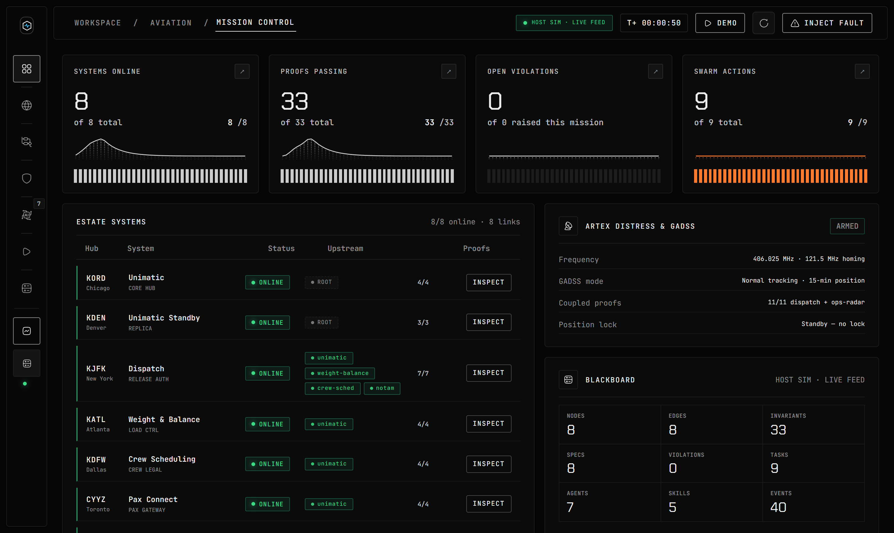
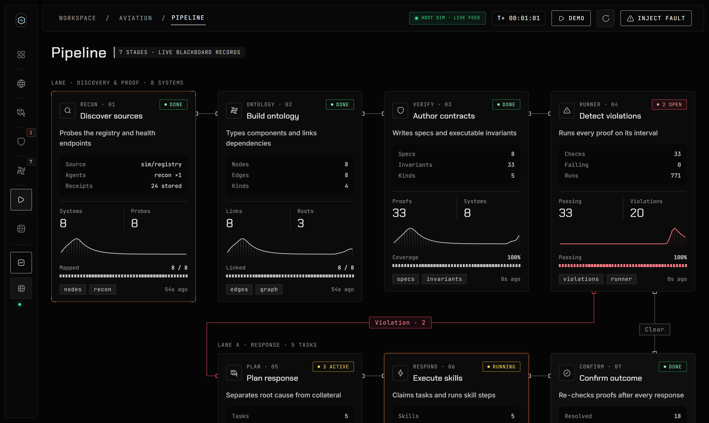
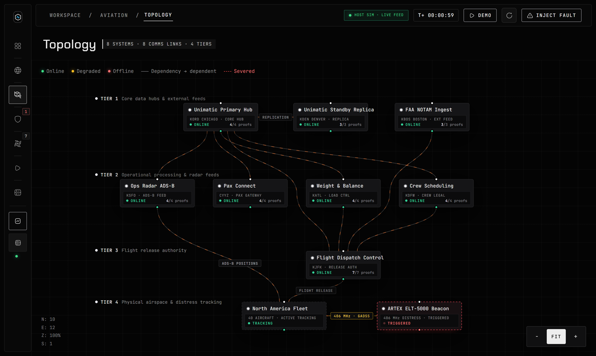

A swarm of agents that maps critical systems, proves they work, and repairs them the moment a proof breaks.
When one hidden dependency breaks, operators learn the dependency graph live, in the dark. The failure is small; the blast radius is invisible.
United's Unimatic flight-information system went down and the FAA ground-stopped Chicago, Denver, Houston, Newark and San Francisco.
CrowdStrike (2024), the FAA NOTAM outage (2023), Alaska (2025): a dependency nobody had mapped, cascading into everything above it.
Northern aviation runs on thin redundancy. A swarm that maps, proves and repairs communication paths is a north-connectivity story.
Probe every service, record the evidence, write systems and dependency links.
Availability, latency budgets, schema and cross-system consistency, run on an interval.
Gemini picks the root cause and the fix; a response agent runs it; the proofs must go green again.

Everything that matters lives in two layers. The simulated airline and the control board are plumbing around them.
Decides what each system is, what must stay true about it, and what to do when that breaks. Every decision returns as structured JSON.
The only way agents talk. Every observation, check, violation, task and action is a document. No agent-to-agent calls, so every decision is a receipt you can click.
| Requirement (organizer, MLH, GDG) | How ARSU meets it | Status |
|---|---|---|
| Gemini does substantive work in a core function, not a chatbot | Gemini authors the ontology, the executable checks, the specs and the triage plan. The assistant panel was removed. | Built |
| Built from scratch in the window; commits count | Every commit is in public history from Nov 22 onward. | Met |
| GitHub repo + short demo video via the form | Repo is ready. The video is recorded from the built-in demo director. | Video to record |
| Deadline: end of day Fri Nov 27 · demos Sat Nov 28, College Boreal | Booth runs npm run demo, then /?demo. | In progress |
| Suggested tools: Gemini API, Gemini CLI, Antigravity, Firebase, Google Cloud | Gemini API is core. A Firestore adapter exists. The others are not required by the published rules. | Partial |
Prize: Best Use of the Google Gemini API ($500). Judges: Wesley Chun, Arcadio Quintero, plus attendee votes. No weighted rubric is published. Source: docs/HACKATHON.md, checked Nov 22.
| Agent call | Shape | What Gemini decides |
|---|---|---|
Recon · roles.ts | node | Block kind, description, confirmed dependencies from probe output |
Verify · roles.ts | invariants | The executable checks: kind, URL, thresholds, interval |
Verify · roles.ts | spec | A human-readable behavioral contract per system |
Orchestrator · orchestrator.ts | triage | Root cause, which skill to run, priority, rationale |
Deterministic code then runs the checks and the skills, so a model never touches production directly. It proposes; proofs verify.
POST generativelanguage.googleapis.com
/v1beta/models/gemini-2.5-flash
:generateContent
responseMimeType: application/json plus a responseSchema per shape, with enums for check kinds and a 1–5 priority.
Every call goes through ModelProvider in provider.ts. A failed call falls back to SIM and is logged; the demo cannot stall.
The Blackboard interface is literally Firestore's shape: get · put · add · patch · query · watch · emit. It has two implementations behind one switch.
| Backend | When | watch() |
|---|---|---|
| LocalBlackboard | Default and demo; zero credentials | In-process listeners |
| FirestoreBlackboard | Three FIREBASE_* env vars set | onSnapshot |
Config, not code: only firestore.ts imports @google-cloud/firestore. Swapping storage changes nothing about how the swarm reasons.
onSnapshot| 01–02 | Empty board · 40 flights on real routes |
| 03–04 | Launch: 8 systems and 8 links mapped in ~12 s |
| 05–06 | 33 / 33 Gemini-authored proofs green |
| 07 | Take Unimatic offline: ground stop, ARTEX beacon fires |
| 08 | Triage picks hub-failover; standby takes over |
| 09–10 | Re-verified · evidence JSON downloaded |
The built-in demo director runs each beat, waits for live evidence, and can run the whole show on autopilot.

Hub outage, slow load sheet, cut NOTAM link, corrupt manifest: each recovers and re-verifies in automated tests. A run only counts when every proof passes after the response.

Simulated estate, not live FAA data. Executable checks, not formal verification.
Gemini reasons about what must stay true. The blackboard remembers every decision. The swarm restores the system and proves it.